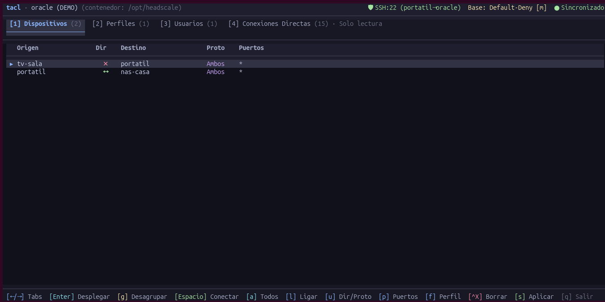
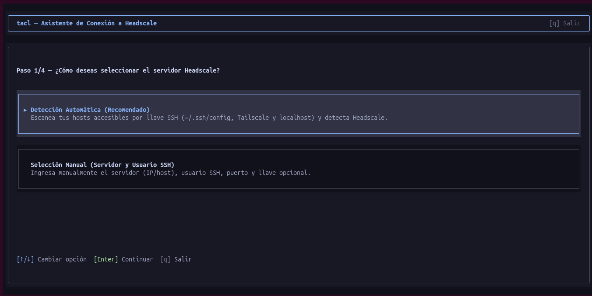
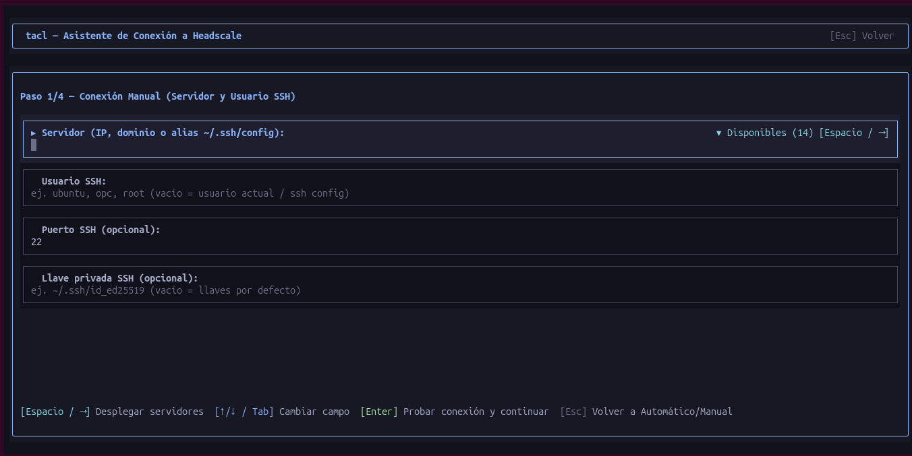
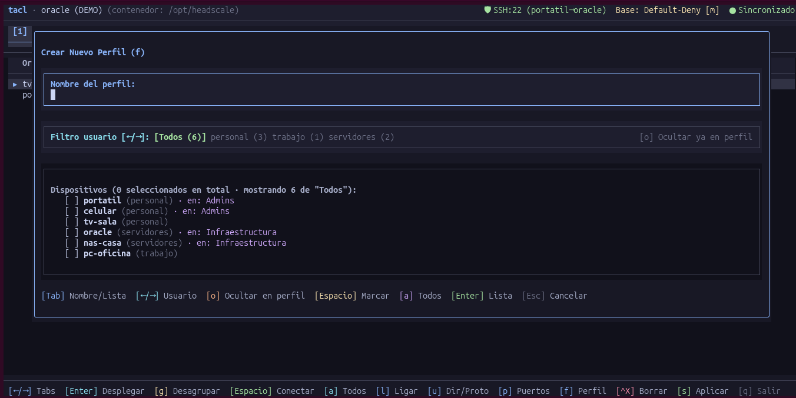
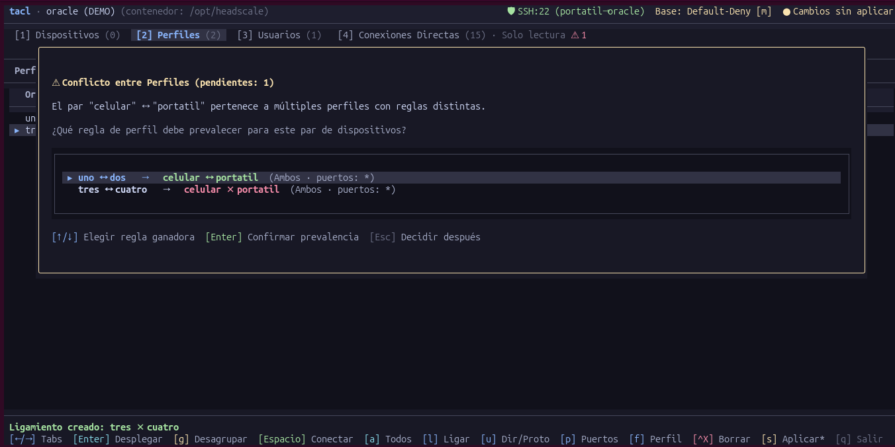
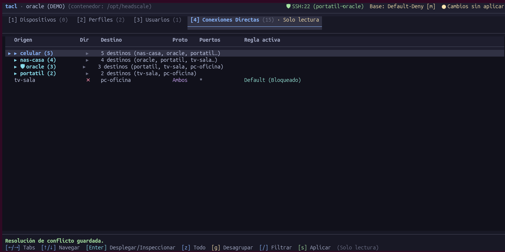
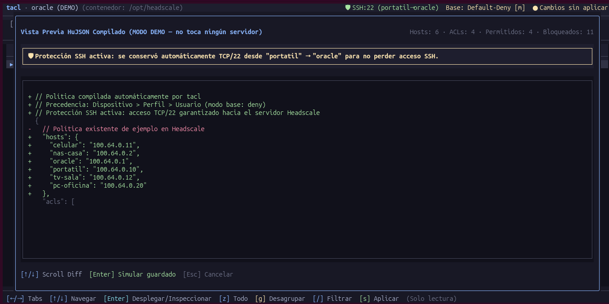

Precedencia estricta
Evalúa cada par de nodos en orden Dispositivo > Perfil > Usuario > Default.
Siempre sabes qué regla manda y por qué.
tacl es una TUI interactiva que transforma un modelo
jerárquico claro (Dispositivo > Perfil > Usuario) en
políticas HuJSON limpias y válidas, con detección de
conflictos, protección automática de tu SSH y vista previa diff.

Diseñada para administradores que quieren claridad visual, seguridad al aplicar cambios y cero bloqueos accidentales.
Evalúa cada par de nodos en orden Dispositivo > Perfil > Usuario > Default.
Siempre sabes qué regla manda y por qué.
Identifica automáticamente tu equipo local y el servidor Headscale para
impedir que te bloquees fuera de tu acceso TCP/22.
Sondea hosts accesibles por llave desde ~/.ssh/config,
Tailscale y localhost, o permite conexión manual con lista
desplegable.
Compatible con instalaciones nativas (systemd/binario) y
contenedores Docker / Podman con explorador remoto de
carpetas.
Un dispositivo puede pertenecer a múltiples perfiles. Si dos reglas chocan,
tacl te pregunta cuál prevalece y guarda tu decisión.
Preserva secciones externas (ssh, autoApprovers,
tagOwners), muestra el diff línea por línea y respalda tu
política previa antes de recargar.
taclLos binarios son completamente autocontenidos: no necesitas instalar Bun ni Node.js en tu sistema.
Ejecuta el instalador oficial vía curl. Descarga el binario
para Linux x86_64 desde GitHub Releases y deja el comando
tacl listo en tu PATH (/usr/local/bin
o ~/.local/bin):
curl -fsSL https://raw.githubusercontent.com/Tsurematsu/tacl/main/docs/install.sh | shUna vez instalado, ejecútalo directamente desde cualquier directorio:
tacl # Conecta al servidor guardado o abre el asistente inicial
tacl --demo # Prueba toda la TUI con datos simulados (sin tocar Headscale)
tacl --rescan # Cambia de servidor o alterna entre modo Nativo y Contenedor
tacl --help # Ver ayuda rápida y atajostacl a la última versión si hay una nueva disponible.
También puedes fijar una versión o ruta con
TACL_VERSION=v0.1.1 TACL_INSTALL_DIR="$HOME/bin" (o
TACL_FORCE=1 para reinstalar), y revisar
install.sh antes de ejecutarlo.
Descarga el binario autocontenido para Windows x64 desde PowerShell o directamente desde Releases:
Invoke-WebRequest -Uri "https://github.com/Tsurematsu/tacl/releases/latest/download/tacl-windows-x64.exe" -OutFile "tacl.exe"
.\tacl.exe --demotacl.exe a tu variable de
entorno PATH para ejecutarlo como tacl desde
cualquier terminal.
Si deseas ejecutar desde el código fuente o compilar tus propios binarios (requiere Bun >= 1.3):
git clone https://github.com/Tsurematsu/tacl.git
cd tacl
bun install
bun run start # Modo normal
bun run demo # Modo demostración
bun run build # Compila Linux x64 y Windows x64 en dist/ssh)
con acceso por llave al servidor Headscale. Opcionalmente,
tailscale CLI para descubrir peers e identificar tu equipo
local en la protección SSH.
Desde el primer escaneo SSH hasta la publicación del HuJSON en Headscale. Haz clic en cualquier captura para verla en tamaño completo.
Al arrancar por primera vez (o con tacl --rescan), el
asistente detecta automáticamente los hosts accesibles por llave SSH y
marca aquellos donde corre Headscale.
~/.ssh/config,
Tailscale y localhost, o escribe el servidor y usuario a
mano con lista desplegable (Espacio / →).
systemd
o abre un explorador remoto para elegir la carpeta de tu contenedor.
Default-Deny).

En las pestañas Dispositivos, Perfiles o Usuarios, pulsa Espacio para abrir el asistente guiado de conexión:
↔, →, ← o ✕ y
protocolo TCP, UDP o Ambos.
*, SSH, DNS, HTTP/S, RDP, PostgreSQL, etc.) o añade
puertos y rangos personalizados con a.

Pulsa f para crear o editar perfiles lógicos propios de
tacl (por ejemplo Servidores, IoT o
Administradores) sin depender de tags de Headscale.

Como un dispositivo puede estar en varios perfiles a la vez, si dos
reglas de perfil generan efectos contradictorios sobre un mismo par,
tacl detiene la ambigüedad al instante.
tacl.yaml.

Cambia a la pestaña [4] Conexiones Directas para revisar la matriz final resuelta de todos los pares de dispositivos de tu red.
🛡 está activo.

Cuando estés conforme con la matriz, pulsa s para compilar la política y revisar exactamente qué cambiará en tu servidor.
+), eliminaciones (-) y estadísticas de
hosts y reglas.
.bak-<timestamp>) antes de escribir el nuevo
archivo.
SIGHUP
(modo file) o headscale policy set (modo
database), solicitando contraseña sudo en RAM
solo si hace falta.

Como Headscale solo admite reglas accept, tacl
calcula la matriz completa y omite las conexiones bloqueadas para que esos
nodos sean 100% invisibles entre sí en el NetMap.
Para cada par de dispositivos (A, B), gana el nivel más alto:
Nunca volverás a quedarte sin acceso SSH al servidor donde administras Headscale:
tailscale status --json) con la IP
Tailscale, IP SSH o hostname remoto del servidor destino.
🛡 SSH:<puerto> en la barra superior y bloquea
cualquier intento de denegar o quitar TCP/<puerto>
para ese par.
Default-Deny o bloqueos por Perfil/Usuario,
emite siempre la regla accept necesaria y la destaca en el
diff.
Todo en tacl se controla ágilmente desde el teclado.
| Atajo | Acción |
|---|---|
| ← → · Tab · 1–4 | Cambiar entre Dispositivos, Perfiles, Usuarios y Conexiones Directas |
| ↑ ↓ · k j | Desplazarse por las filas de la tabla |
| Enter | Desplegar/colapsar grupo de origen (o abrir Inspector en Conexiones Directas) |
| z / g | Expandir/colapsar todos los grupos (z) · Alternar vista agrupada/plana (g) |
| / | Filtrar en vivo por nombre, perfil, usuario o regla (Esc limpia) |
| m | Alternar política base entre Default-Deny y Sin restricción extra |
| r / Shift+R | Refrescar inventario de Headscale (r) · Reabrir asistente de servidor (Shift+R) |
| c | Abrir resolvedor de conflictos de perfiles (si hay pendientes) |
| s | Compilar política, revisar Diff HuJSON y aplicar en Headscale |
| q / Ctrl+C | Guardar estado en local y remoto y salir |
| Atajo | Acción |
|---|---|
| Espacio | Asistente guiado de conexión en 3 pasos (Origen → Destino → Dir/Proto/Puertos) |
| a | Abrir panel con todos los dispositivos, perfiles o usuarios de la pestaña actual |
| l | Ligar entidades del mismo nivel en vista de dos columnas |
| u | Editar dirección (↔, →, ←, ✕) y protocolo (TCP, UDP, Ambos) |
| p | Gestionar puertos de la regla seleccionada (a añadir, e editar, x eliminar) |
| f | Crear o editar perfil con filtro por usuario y checkboxes de dispositivos |
| Ctrl+X | Eliminación segura en 2 pasos (selección múltiple + confirmación de impacto) |
| Archivo | Ruta y propósito |
|---|---|
| Configuración local | ~/.config/tacl/config.json — Servidor, modo (nativo/contenedor), ejecutable y rutas detectadas. |
| Estado local (prevalece) | ~/.config/tacl/state/<host>-tacl.yaml — Guardado automático de borradores, perfiles, reglas y pestaña activa. |
| Estado remoto | <carpeta-headscale>/tacl.yaml — Sincronizado al salir o aplicar como respaldo entre equipos. |
| Respaldo local extra | ~/.config/tacl/backups/<host>-tacl.yaml — Copia local de seguridad adicional. |
| Backup ACL anterior | <ruta-acl>.bak-<timestamp> — Respaldo automático de tu HuJSON previo antes de sobrescribir. |